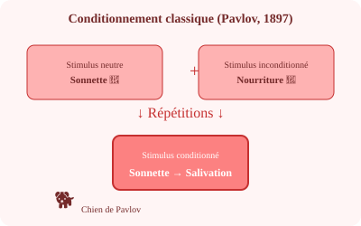

Apprentissage
Apprentissage

Salivez-vous quand sonne l'heure du dîner ?
Le conditionnement classique (Pavlov, 1897) : un stimulus neutre (sonnette) associé répétitivement à un stimulus inconditionné (nourriture) devient capable de provoquer la réponse (salivation) seul.
Apprenons-nous de nos récompenses ?
Le conditionnement opérant (Skinner) : le comportement est modelé par ses conséquences.
- Renforcement positif : Ajouter quelque chose d'agréable → augmente le comportement.
- Renforcement négatif : Retirer quelque chose d'aversif → augmente le comportement.
- Punition : Diminue le comportement (effets secondaires possibles).
- Extinction : Cesser le renforcement → le comportement disparaît.
Apprendre est-il un jeu d'imitation ?
L'apprentissage social (Bandura, 1961) : l'expérience Bobo doll montre que les enfants imitent les comportements observés, surtout si le modèle est valorisé. L'apprentissage ne nécessite pas de renforcement direct.
Dix mille heures de pratique feront-elles de vous un génie ?
La règle des 10 000 heures (Ericsson) est simplifiée. La pratique délibérée compte, mais le talent initial, la qualité de l'encadrement et le domaine influencent aussi les performances d'expert.
Comment un enfant voit-il le monde ?
Piaget décrit 4 stades : sensorimoteur (0–2 ans), préopératoire (2–7), opératoire concret (7–11), opératoire formel (11+). Chaque stade restructure la compréhension du monde.